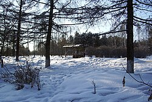
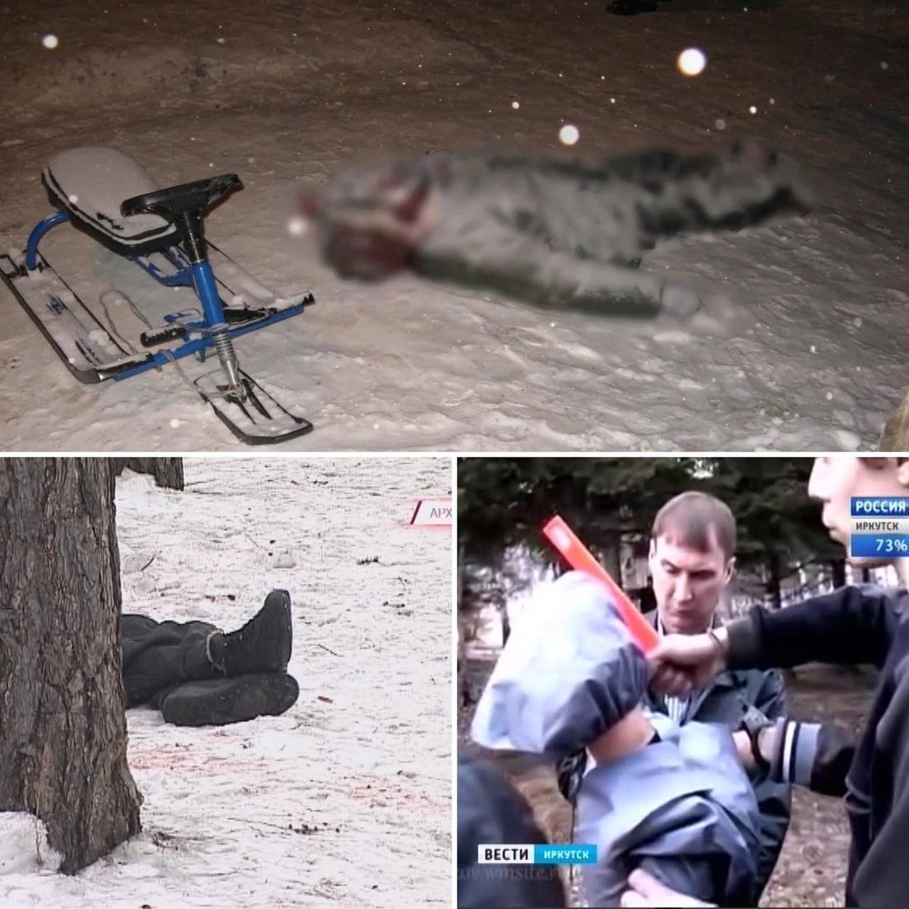

Нападения совершались вечером или ночью, чаще сзади, молотками, битами и ножами; позже использовали пневматический пистолет. Мать каждого работала по ночам. Здесь только хроника без лишних подробностей.

Нападения совершались вечером или ночью, чаще сзади, молотками, битами и ножами; позже использовали пневматический пистолет. Мать каждого работала по ночам. Здесь только хроника без лишних подробностей.
14 ноября они напали на 18-летнюю Анастасию Марковскую; она выжила. Полиция не возбудила дело, так как ничего не украли. Позже нападавшие переписывались с ней в сети. 24 ноября ограбили и ударили 46-летнюю женщину.
Мальчик катался на снегокате с горки. На него напали сзади. Когда его нашли мать и брат, он был ещё жив, но скорая застряла в пробке. Смерть сочли несчастным случаем. По их словам, это было «тренировкой».
Ведущий научный сотрудник института солнечно-земной физики. Тело нашли в 20 метрах от места гибели Данила; деньги и украшения не тронуты. Нападавшие записали это на диктофон.
Утром напали на Инессу Светлову (выжила), затем на беременную тренера Екатерину Карпову и её шестилетнюю племянницу. Девочку ударили, женщину избили; их спас проезжавший автомобиль. Ребёнок и женщина выжили.
Около 5 утра на улице Лермонтова. Мужчина без определённого места жительства умер в больнице, личность не установили («труп № 20»). По этому эпизоду в 2011 году ошибочно осудили 19-летнего Владимира Базилевского.
30 января напали на студента Олега Семёнова (выжил). 3 февраля ранили пожилую женщину, 8–9 февраля ещё одну женщину; обе выжили.
Мужчина возвращался домой от сестры. Его убили ударами и выстрелом из пневматического пистолета. Хоронили в закрытом гробу. Останки черепа стали вещественным доказательством.
Лыткин в одиночку напал на Нину Кузьмину, сидевшую на скамейке. Её крики заметил сосед, нападавший убежал. Она выжила.
Мужчина без определённого места жительства. Рядом с остановкой «Госуниверситет» в него выстрелили, затем нанесли ножевые ранения. Ануфриев потом сфотографировал тело из окна.
Последняя жертва, женщина без определённого места жительства. После убийства они снимали издевательство над телом на видео. Именно эта запись помогла выйти на них.


Помимо перечисленных, были два нападения с неточной датой (одна женщина под аркой, одна женщина без определённого места жительства). Все 9 пострадавших выжили.